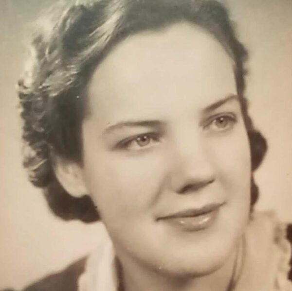

Koerierster · V.K.B.S.
Antoinette ‘Netty’ Offers
Netty was zeventien toen de oorlog uitbrak en werkte als lokettiste op station Haarlem. Ze nam deel aan de Spoorwegstaking van september 1944 en sloot zich daarna aan bij het Vrouwelijk Korps Binnenlandse Strijdkrachten als koerierster. Dankzij haar NS-documenten kon ze vrij reizen, ondanks de bezetter.
Vanaf mei 1941 hield ze vijf dagboeken bij — achthonderd pagina’s vol verhalen, krantenknipsels en verzetsnieuws.